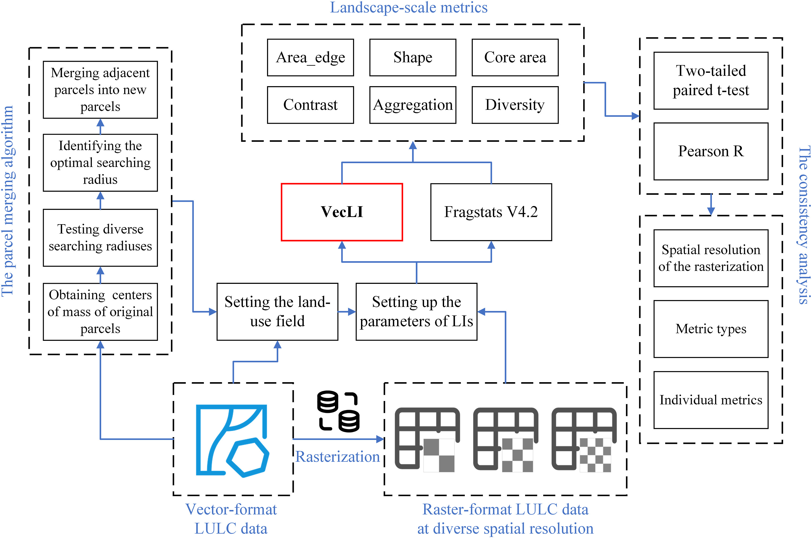
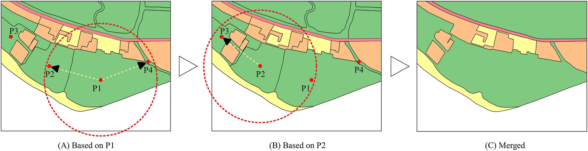
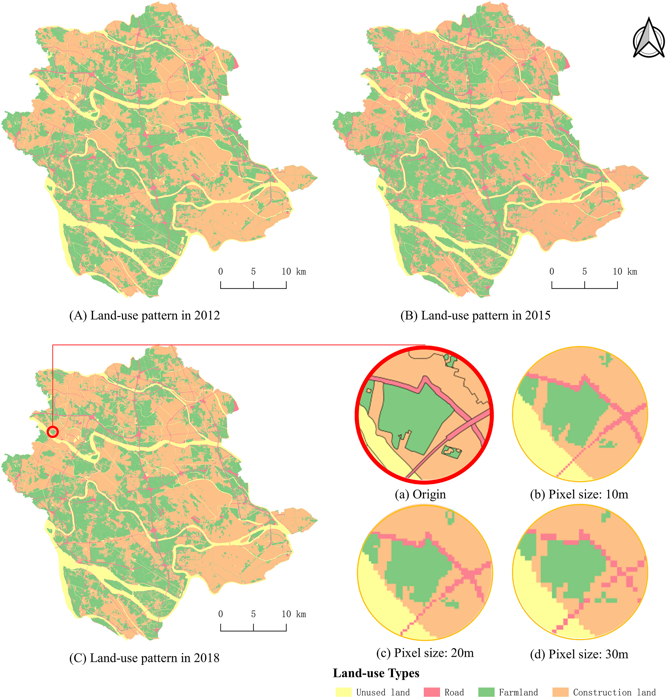

Currently, raster-based landscape indices (LIs) that measure the landscape pattern of raster-format land-use data can be easily computed by relevant software (e.g., Fragstats). Unfortunately, open-access software for vector-based LIs often implements a small variety of metrics, which cannot meet the growing demand of the GIS and landscape design research. The common approach often results in a loss of accuracy. Hence, this paper presents the state-of-the-art VecLI framework for computing 217 vector-based LIs. A parcel merging algorithm is proposed to address the impact of landscape fragmentation on vector-based LIs by considering the neighborhood effect. A case study was conducted in Shunde, China. The result shows that 80% of the LIs from VecLI are strongly correlated to Fragstats's LIs. The patch perimeter-related metrics from VecLI portray a more realistic geographical pattern compared to those from Fragstats. Moreover, the VecLI-based software is developed for use by the GIS and landscape design researchers.
Landscape indices (LIs), also called landscape metrics, are the important basis in the field of landscape ecology. In landscape-related studies, landscape modeling often applies LIs to measure landscape spatial patterns and analyze their temporal evolutions. With the application of LIs in geographic information science, they have been widely used in urban planning, ecological assessment, and environmental management.
Currently, the most widely used software for computing LIs is Fragstats, which provides 251 raster-based metrics in version 4.2. In second place is the R package "landscapemetrics", which implements 134 metrics. However, open-access vector-based software for computing LIs still only offers a paucity of vector-based metrics. These vector-based tools often implement a small variety of metrics and cannot meet the growing demand of GIS and landscape design research.
The common approach of converting vector data to raster format for computing LIs often results in a loss of accuracy due to the rasterization process. This paper presents the VecLI framework to address these limitations, providing a comprehensive set of 217 vector-based landscape indices and a parcel merging algorithm to handle landscape fragmentation.
The VecLI framework is designed for computing vector-based landscape indices considering landscape fragmentation. As shown in Fig. 1, the framework consists of several key components: data input, parcel merging, landscape index computation, and result output.

A parcel merging algorithm is proposed to address the impact of landscape fragmentation on vector-based LIs. The algorithm merges adjacent parcels with the same land-use type by considering the neighborhood effect, using a breadth-first search (BFS) approach. This process eliminates the artificial fragmentation caused by administrative boundaries and road networks that split otherwise contiguous land-use patches.

The VecLI framework computes 217 vector-based landscape indices across three levels: patch-level, class-level, and landscape-level. These indices cover eight metric groups: Area/Edge, Shape, Core Area, Contrast, Aggregation, Diversity, Subdivision, and Isolation. The vector-based computation avoids the accuracy loss inherent in rasterization and provides more precise perimeter and shape measurements.
A case study was conducted in Shunde District, Foshan, China. Shunde is located in the Pearl River Delta region and has experienced rapid urbanization, making it an ideal study area for investigating landscape pattern changes. The land use and land cover data of Shunde were used to evaluate the VecLI framework.

The results show that 80% of the LIs from VecLI are strongly correlated to Fragstats's LIs, validating the correctness of the VecLI framework. The mean values of the raster- and vector-based LIs are closer to each other in measuring the pattern of the landscape.
The patch perimeter-related metrics from VecLI portray a more realistic geographical pattern compared to those from Fragstats. This is because vector-based computation preserves the actual geometric shape of land parcels, while rasterization introduces staircase effects along patch boundaries that distort perimeter measurements.
The parcel merging algorithm effectively addresses the impact of landscape fragmentation on vector-based LIs. By merging adjacent parcels with the same land-use type, the algorithm reduces the artificial fragmentation caused by administrative boundaries and road networks, resulting in more accurate landscape pattern measurements.
This paper presents the VecLI framework for computing vector-based landscape indices considering landscape fragmentation. The main contributions are:
@article{YAO2022105325,
author = {Yao, Yao and Cheng, Tao and Sun, Zhenhui and Li, Linlong and Chen, Dongsheng and Chen, Ziheng and Wei, Jianglin and Guan, Qingfeng},
title = {VecLI: A framework for calculating vector landscape indices considering landscape fragmentation},
journal = {Environmental Modelling \& Software},
volume = {149},
pages = {105325},
year = {2022},
issn = {1364-8152},
doi = {10.1016/j.envsoft.2022.105325},
publisher = {Elsevier}
}